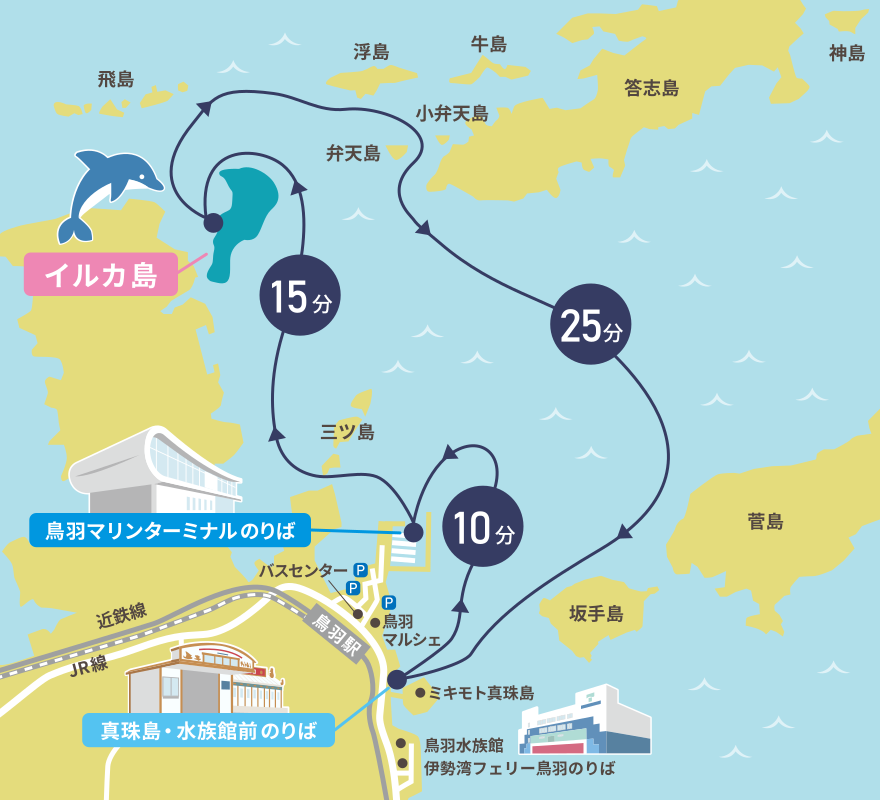
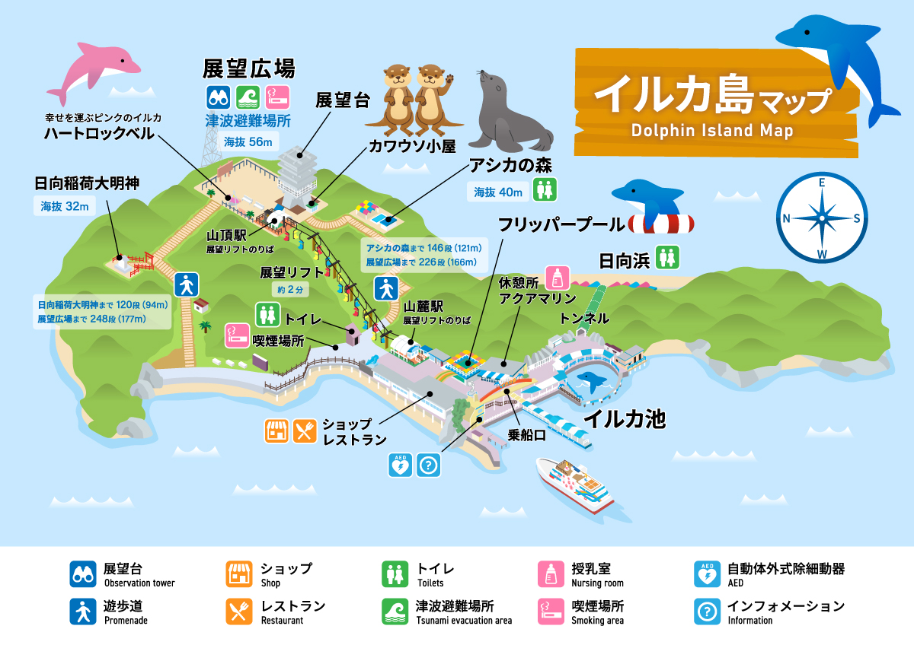

イルカ島ガイド
鳥羽湾クルーズと動物たちとのふれあいを楽しもう！
イルカ島ってどんなところ？
鳥羽湾クルーズを楽しみながら向かう人気スポット！ 島内ではイルカ・アシカ・カワウソたちとふれあえるプログラムが開催されています。
料金案内
| 区分 | 料金 |
|---|---|
| 大人 | 2,400円 |
| 子ども（4歳～） | 1,300円 |
※ 鳥羽湾めぐり＋イルカ島入園料込み
鳥羽湾めぐり航路図

時刻表
| 時 | 真珠島・ 水族館前 のりば発 |
鳥羽マリン ターミナル発 |
イルカ島発 |
|---|---|---|---|
| 9 | 15・45 | 00・30 | 15・45 |
| 10 | 15 | 00・30 | 15 |
| 11 | 15 | 30 | 45 |
| 12 | 15 | 30 | 45 |
| 13 | 15・45 | 30 | 45 |
| 14 | 15・45 | 00・30 | 15・45 |
| 15 | 15・45 | 00・30 | 15・45 |
| 16 | 00 | 15 |
| 時 | 真珠島・ 水族館前 のりば発 |
鳥羽マリン ターミナル発 |
イルカ島発 |
|---|---|---|---|
| 9 | 15・45 | 00・30 | 15・45 |
| 10 | 15・45 | 00・30 | 15・45 |
| 11 | 15・45 | 00・30 | 15・45 |
| 12 | 15・45 | 00・30 | 15・45 |
| 13 | 15・45 | 00・30 | 15・45 |
| 14 | 15・45 | 00・30 | 15・45 |
| 15 | 15・45 | 00・30 | 15・45 |
| 16 | 00 | 15 |
イルカ島マップ

生き物たちのプログラム
イルカ飼育体験
約10分
年齢制限なし
600円
各回12杯
イルカの遊び時間
約15分
体表チェック
約20分
小学生以上
800円
定員15名
アシカの遊び時間
約15分
イルカにごあいさつ
年齢制限なし
無料
カワウソの遊び時間
年齢制限なし
無料
各回50名